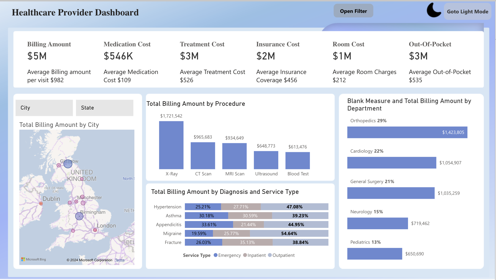
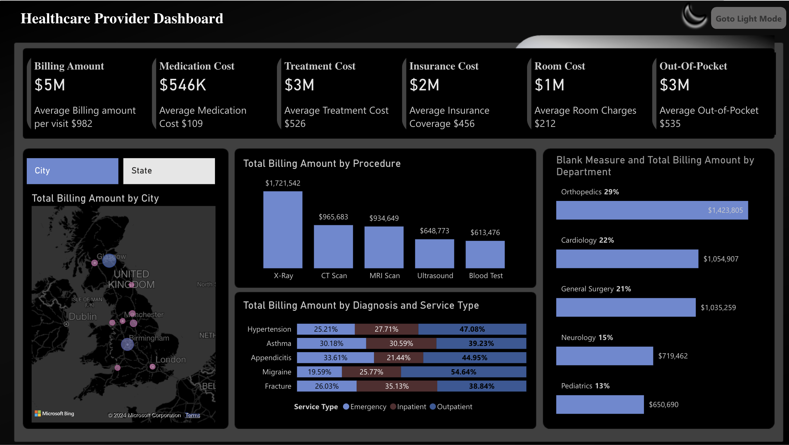

HEALTHCARE PROVIDER DASHBOARD
This healthcare data analytics project involved the development of a comprehensive dashboard to provide insights into various aspects of a hospital's operations. The dashboard covers critical metrics such as Billing Amount, Medication Cost, Treatment Cost, Insurance Cost, Room Cost, and Out-of-Pocket expenses.
Homeclass="image fit">When I started this project, my first focus was on data cleaning and preparation using Power Query. This phase felt like laying a strong foundation for everything else. I began by importing key data sources, including hospital records, billing details, insurance claims, and patient demographics. Once inside the Power Query editor, I meticulously worked through various transformation tasks to ensure the data was clean, consistent, and ready for analysis.
Key steps included
- Removing duplicate or erroneous records
- Standardizing date and time formats
- Addressing missing values and outliers
- Splitting or parsing columns to extract relevant information
Building the Analytical Model (Power BI):
Calculated key metrics using DAX (Data Analysis Expressions):
- Created a measure for "Average Billing Amount per Visit" by dividing "Billing Amount" by the number of "Visits."
- Developed a measure to calculate the "Total Billing Amount by Procedure" by summing "Billing Amount" values grouped by procedure type.
Tables and Their Relationships:
- Cities Table: Links City ID to the patients table to provide location information.
- Departments Table: Links Department ID to the visits table to relate visits to specific hospital departments.
- Diagnoses Table: Connects Diagnosis ID to the visits table, detailing the diagnoses associated with visits.
- Insurance Table: Links Insurance ID to the visits table to include insurance coverage details.
- Patients Table: Serves as a central table, linking to visits, cities, and other relevant data.
- Providers Table: Links Provider ID to the visits table, associating healthcare providers with visits.
- Procedures Table: Links Procedure ID to the visits table, categorizing medical procedures performed during visits.
- Date Table: Links Date to the visits table for time-based analysis of hospital data.
To enhance user experience, I added interactive features like the "Open Filter" and "Go to Light Mode" buttons. These small touches were important to me, as I wanted users to explore the data easily and feel in control of their analysis.
